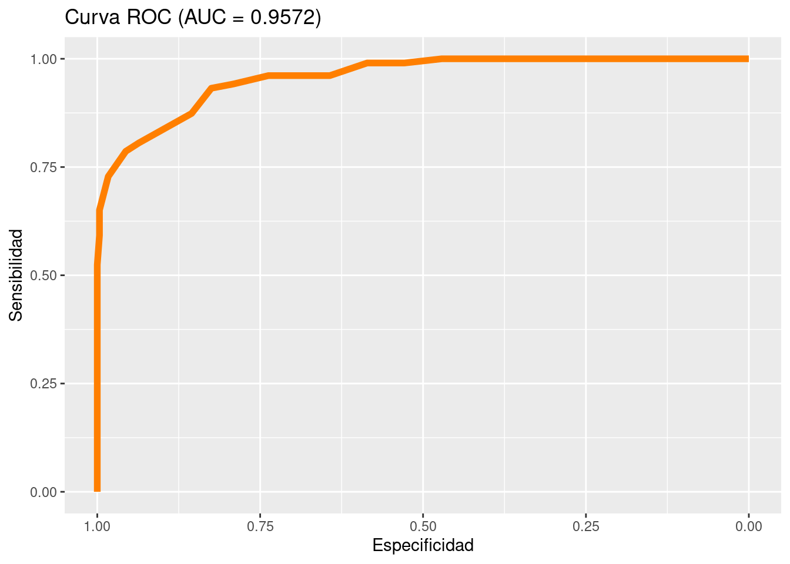

La validación cruzada es una metodología empleada para determinar si los resultados obtenidos es consistente para muestras diferentes a la muestra con que se estima el modelo
Para realizarlo se parte la muestra en dos submuestras:
Una vez separadas las muestras se estima el modelo con la muestra de entrenamiento (modelo1) para después probar la capacidad de clasificación del modelo.
El siguiente ejemplo ilustra su construcción y explicación.
La data dataMat contiene notas de un examen de admisión y el resultado de de aprobación o no del resultado al finalizar el primer curso de matemáticas fundamentales para primer semestre de universidad (Gana o Pierde), que contiene el resultado obtenido por \(n = 200\) estudiantes.
head(dataMat) gana nota
124 No 3.00
80 No 3.30
7 No 2.60
45 No 2.70
76 No 3.10
25 No 2.95Con esta información se pretende construir un modelo que permita la predicción del riesgo de perder el curso conociendo el resultado de la prueba de admisión
\[ \text{gana} \hspace{.2cm}= \hspace{.2cm} \beta_{0} + \beta_{1} \hspace{.2cm} \text{nota} \hspace{.3cm}+ \hspace{.2cm}\varepsilon \] Inicialmente se divide la muestra en dos partes, una para realizar el entrenamiento del modelo y una segunda para realiza la prueba de los resultados
names(dataMat)[1] "gana" "nota"nrow(dataMat)[1] 1000ntrain <- nrow(dataMat)*0.6
ntest <- nrow(dataMat)*0.4
c(ntrain,ntest)[1] 600 400set.seed(123)
index_train<-sample(1:nrow(dataMat),size = ntrain)
train<-dataMat[index_train,] # muestra de entrenamiento
test<-dataMat[-index_train,] # muestra de pruebaCon la muestra de entrenamiento se estima el modelo
modelo1 <- glm(gana~ nota,data = train,family = "binomial")
summary(modelo1)
Call:
glm(formula = gana ~ nota, family = "binomial", data = train)
Deviance Residuals:
Min 1Q Median 3Q Max
-1.84357 -0.28869 -0.07411 -0.01509 2.97937
Coefficients:
Estimate Std. Error z value Pr(>|z|)
(Intercept) -29.3916 2.8244 -10.41 <2e-16 ***
nota 8.4628 0.8293 10.20 <2e-16 ***
---
Signif. codes: 0 '***' 0.001 '**' 0.01 '*' 0.05 '.' 0.1 ' ' 1
(Dispersion parameter for binomial family taken to be 1)
Null deviance: 644.71 on 599 degrees of freedom
Residual deviance: 269.76 on 598 degrees of freedom
AIC: 273.76
Number of Fisher Scoring iterations: 7Se utiliza la muestra de prueba para encontrar la estimación de las probabilidades para sus valores
library(tidyverse)
valor_pronosticado <- predict(modelo1,test,type = "response")
niveles_pronosticados <- ifelse(valor_pronosticado >0.5, "Si","No") %>%
factor(.)
rendimiento_data<-data.frame(observados=test$gana,
predicciones= niveles_pronosticados)
Positivos <- sum(rendimiento_data$observados=="Si")
Negativos <- sum(rendimiento_data$observados=="No")
Positivos_pronosticados <- sum(rendimiento_data$predicciones=="Si")
Negativos_pronosticados <- sum(rendimiento_data$predicciones=="No")
Total <- nrow(rendimiento_data)
VP<-sum(rendimiento_data$observados=="Si" & rendimiento_data$predicciones=="Si")
VN<-sum(rendimiento_data$observados=="No" & rendimiento_data$predicciones=="No")
FP<-sum(rendimiento_data$observados=="No" & rendimiento_data$predicciones=="Si")
FN<-sum(rendimiento_data$observados=="Si" & rendimiento_data$predicciones=="No")
matriz_confusion=matrix(c(VN, FN, FP,VP), nrow=2)
rownames(matriz_confusion) = c(" No ", " Si ")
colnames(matriz_confusion) = c("No", "Si")
matriz_confusion No Si
No 284 13
Si 22 81Exactitud <- (VP+VN)/Total
Tasa_de_Error <- (FP+FN)/Total
Sensibilidad <- VP/Positivos
Especificidad <- VN/Negativos
Precision <- VP/Positivos_pronosticados
Valor_prediccion_negativo <- VN / Negativos_pronosticados
indicadores <- t(data.frame(Exactitud,Tasa_de_Error,Sensibilidad,Especificidad,Precision,Valor_prediccion_negativo))
indicadores [,1]
Exactitud 0.9125000
Tasa_de_Error 0.0875000
Sensibilidad 0.7864078
Especificidad 0.9562290
Precision 0.8617021
Valor_prediccion_negativo 0.9281046library(pROC)
curva_ROC <- roc(test$gana, valor_pronosticado)
auc<- round(auc(curva_ROC, levels =c(0,1), direction = "<"),4) # 0.9177
ggroc(curva_ROC, colour = "#FF7F00", size=2)+
ggtitle(paste0("Curva ROC ", "(AUC = ", auc, ")"))+
xlab("Especificidad")+
ylab("Sensibilidad") 